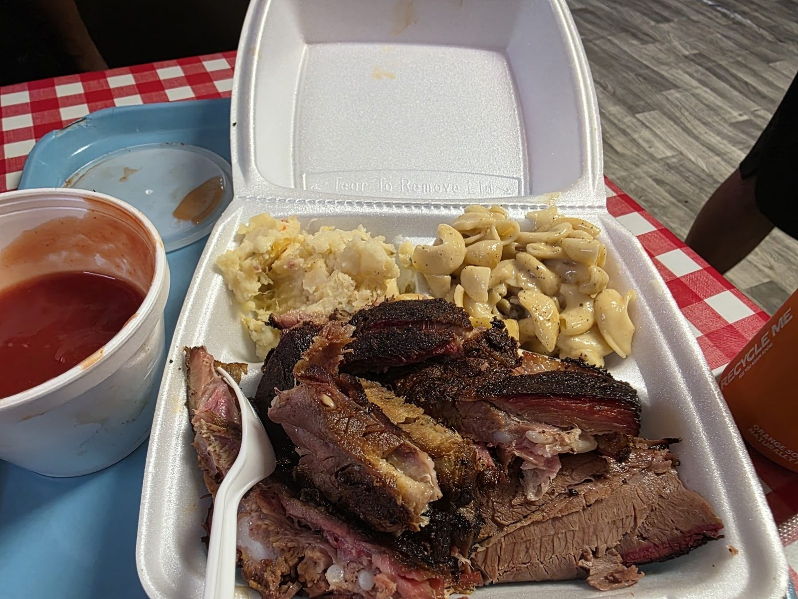
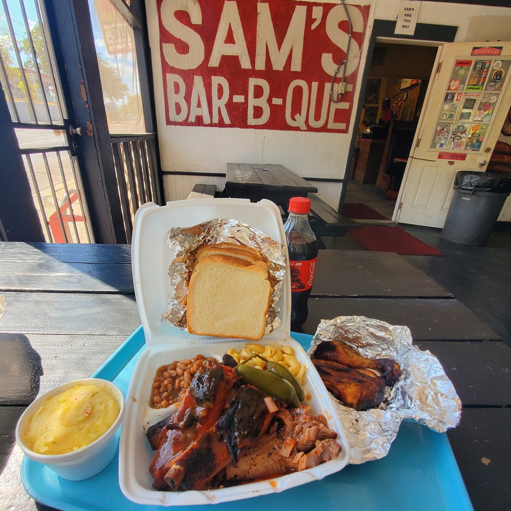
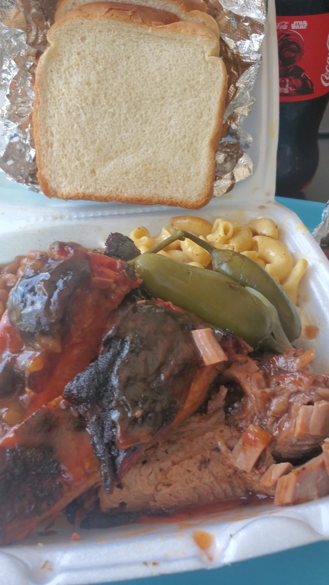
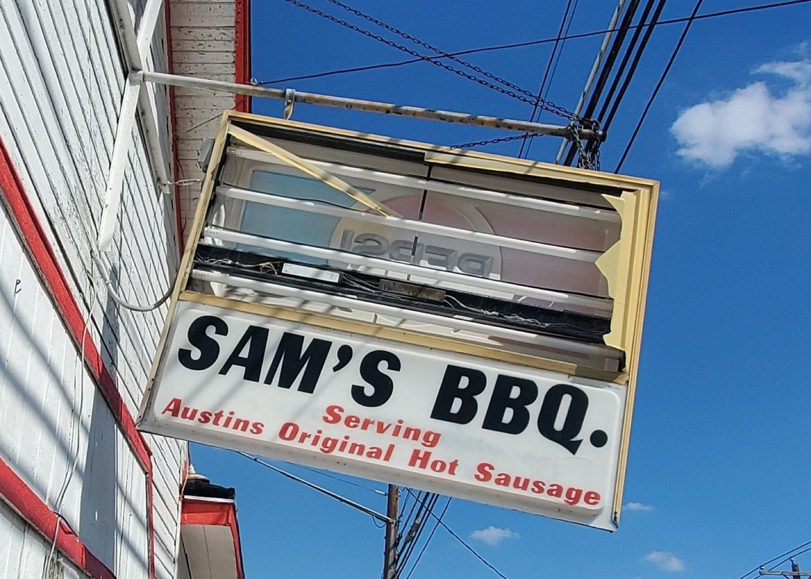
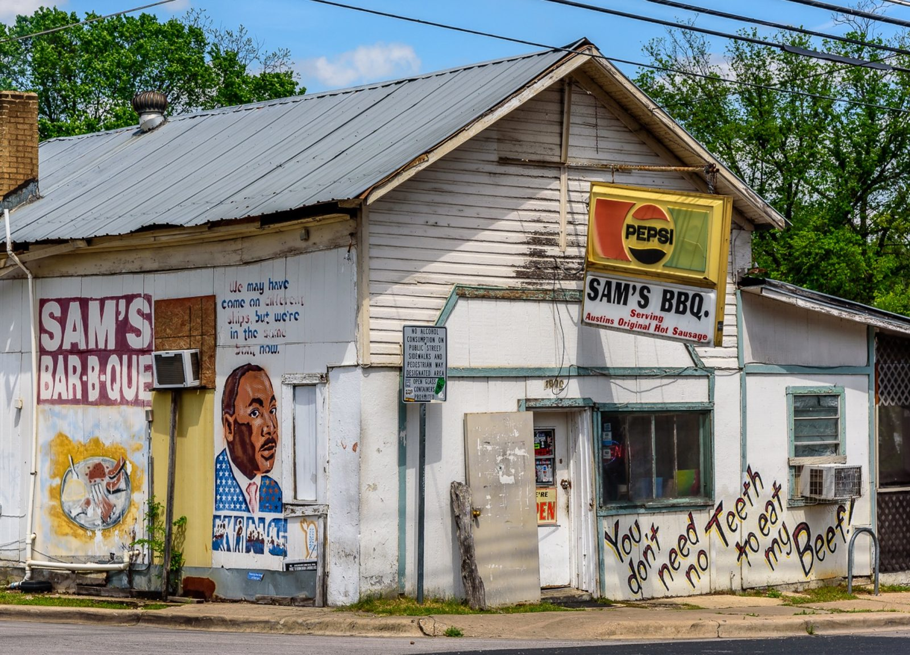
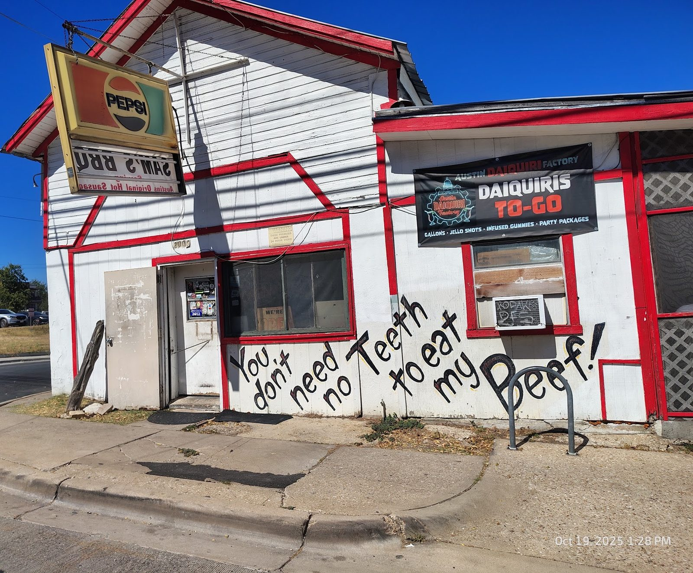
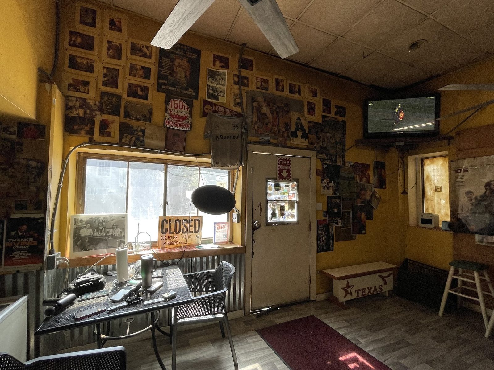
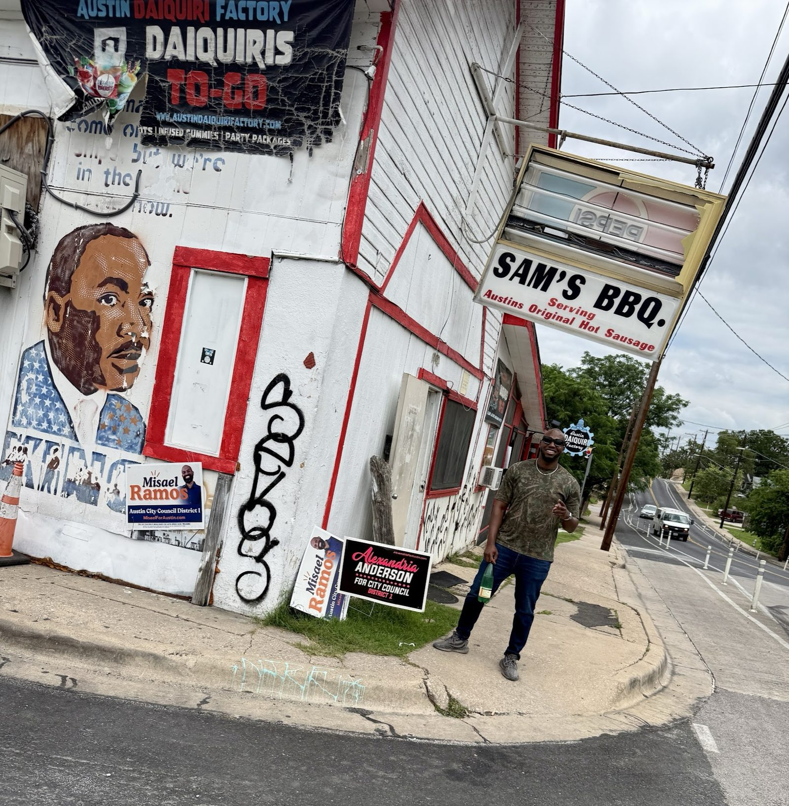
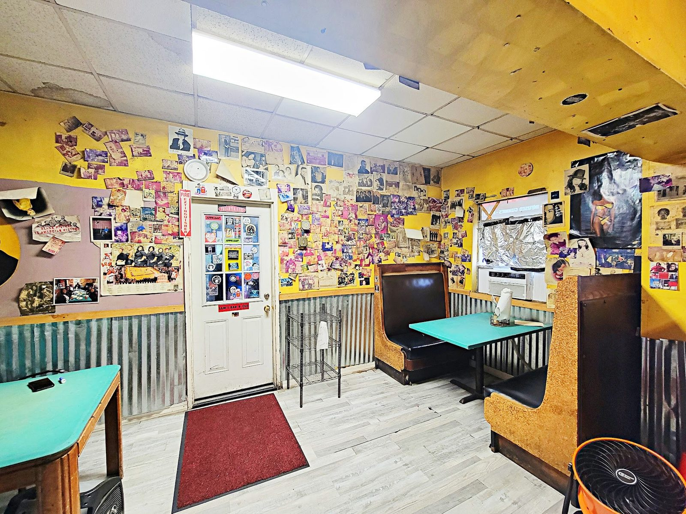

Brisket, sausage & ribs
A two-meat plate with tender brisket and sausage.


Barbecue · East 12th Street, Austin
Brisket, sausage, ribs and chicken from the white shack on East 12th.
What the shack serves
What's on the plate.
A two-meat plate with tender brisket and sausage.

Mac and cheese, yams and white bread alongside. Chicken wrapped in foil.

It's on the sign out front. Ask at the counter.





4.3805 Google reviews
This place does not look like much more than an old shack, and inside it is also aged. But what I found was darn good BBQ done right. I ordered the two meat plate with brisket, sausage, Mac&cheese, yams, and bread. Everything I tasted was full of delicious flavors and tender. The staff were friendly and helpful.
For The Culture. The Food speaks for itself but to truly appreciate the entire experience talk to everyone working there and you automatically feel the years of hard work, pure community, and hilarious vibes. As soon as I tasted the food I smacked the table. Whatever they’re doing over here PLEASE keep doing it! Met Sam and he was awesome as well.
Have not been the in person location, purchased from them as a vendor at a local event. I ordered a bbq chicken sandwich and the flavor of the chicken was good but they left all of the bones in the chicken and then put it in between two slices of bread, and didn’t say anything about it, so I bit into my sandwich and it was straight bones.

Our story
A weathered white shack with a red Bar-B-Que sign, a hot sausage sign and a wall mural. Painted on the siding: you don't need no teeth.
Old shack, barbecue done right. Hard work, community and good humor.
Visit
2000 E 12th St, Austin, TX 78702
White corner building, red sign. Closed Tuesdays. Open until 10 Wednesday to Saturday.